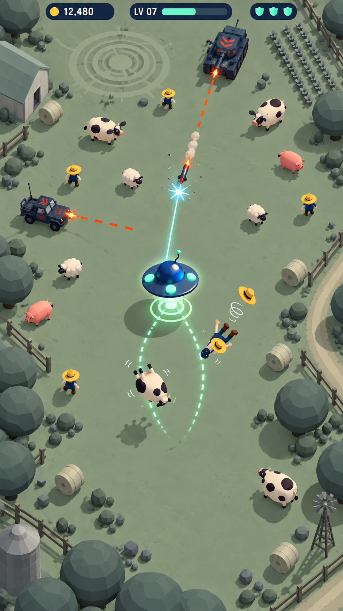
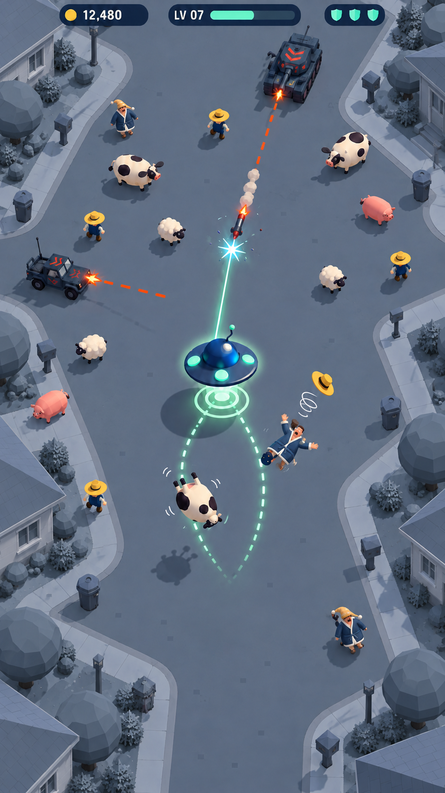
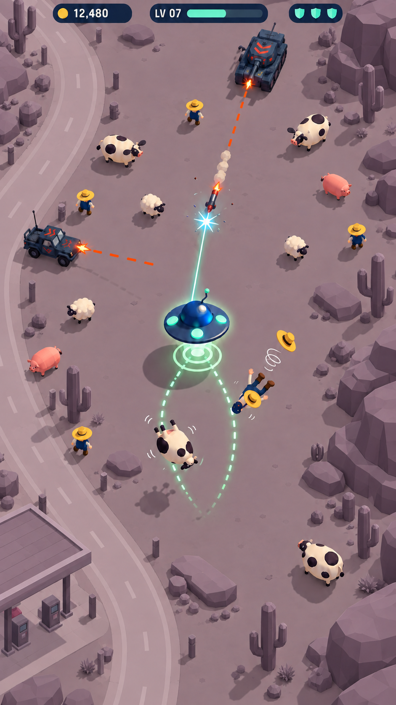

Sage FarmlandOpen paddocks, low barn roofs and crop-circle traces; the whole environment shares a muted sage-grey family.
Slate SuburbiaSleepy residential streets and front gardens, all rendered in subdued slate-blue while the shared warm target palette remains intact.
Mauve Desert RoadsideBroad desert ground, angular rock outcrops, cacti and a roadside canopy in muted mauve; the same coloured cast and effects maintain the game's identity.